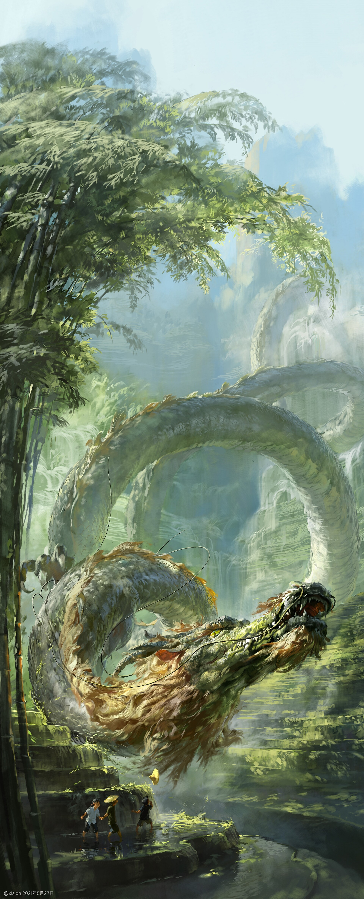

Hi, I'm Gô "Pandours" Pasquier-Miyazaki.
This is an online portfolio made with Xision Wu's art because
I don't have actual drawing skills or equipment. I also recomand WLOP's and
SamDoesArt's art for pretty girls.
This site was created to test some HTML/CSS/responsive/animation/Bootstrap.